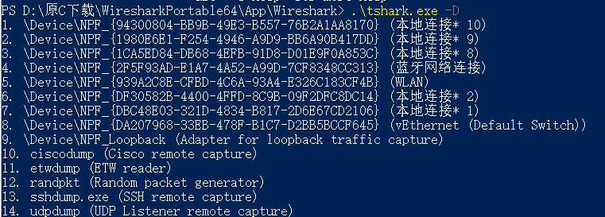

需求
一般来说，用命令行抓包是因为有以下需求
- 有很多机器需要同一个时间点抓包
- 频繁登录到不同主机去启动WireShark比较麻烦
- 将抓好的数据包拷贝到公共路径还需要花时间，还比如打包之类，这种操作很繁琐。
所以如果只有1、2台机器需要抓包，简单的图形化工具也可以完成。也就没必要了解命令行下的操作。
当然还有另外一个场景：
- 张三告诉李四，需要李四去抓包
- 李四不会
- 张三写脚本，方便李四的部署实施。
- 李四跑脚本
获取，以及随身携带
WirekShark是免费软件，主要用来抓数据包，然后分析网络数据包。官方提供了非安装的版本，直接下载Portable版本即可。和安装版相比，两者只是在内容组织上有所差异，实际没有没有任何差异。
WireShark命令行工具
实际上WireShark的纯命令行工具是TShark，这个是dumpcap的外壳程序。虽然WireSharek有命令行参数，但那仅仅是辅助打开GUI的一种方式，不是我们理解的，常规意义的命令行工具。
Wireshark 网络协议分析器提供了三种抓包的基本方法：GUI、Tshark 和 Dumpcap。GUI 是网络分析人员最常用的技术，但是那些想要从脚本中捕获或根本不想通过 GUI 工作的人使用 Tshark 或 Dumpcap。
远程工具
TShark不能远程执行（仅仅是有警告，不确定是否真的有问题），所以这里要借助到一个叫做PSEXEC的免费小工具，用来远程去加载。它属于Sysinternals的套件中的一个小程序。其功能是将不能通过PowerShell的PSSession来执行的程序完美执行。比如打补丁工具wsua
需要注意，PSEXEC可以执行远程的应用程序，但是不能套娃PowerShell本身，所以我们需要构造PS1文件，然后使用Start-Process弹窗执行它，而PS1文件中包含PSEXEC的执行逻辑。这样解决了两个问题
- Tshark不能远程执行
- PSEXEC不能执行PowerShell
准备
安装完成WireShark之后，我们只需要取得当前目录的所有DLL以及/tshark.exe和/dumpcap.exe即可正常工作。所以在企业内部抓包的话，可以改造一下TShark的目录，文件少一点，拷贝也会快一些。
如果是随身版的话，需要前往WiresharkPortable64_3.6.7.paf\App\Wireshark找到对应文件。
经过处理过后的文件，只会找到\device\设备，其他虚拟设备是不会发现的，后面处理也相对省事一些
需要注意的地方
如果希望WireShark正常工作，还需要单独下载一个叫做Npcap 1.70 installer的东西。这个软件有一个特点就是公众版不允许静默安装。静默安装是收费版的权利。。。。。
所以静默安装Npcap不讨论，假设我们需要在每个需要捕获数据包的节点上手动提前安装完成。
正常工作的WireShark大概是这样的。
捕获逻辑
回忆一下我们抓包的过程
- 登录特定主机
- 安装Npcap
- 安装/拷贝WireShark
- 打开WireShark
- 选中需要抓包的网卡，一般全部选中
- 点击
鲨鱼鳍标志，开始捕获 - 等待捕获结束，点
红色方框结束 - 保存捕获文件
- 拷贝所有的捕获文件，然后放到一个集中的地方去分析
命令行完成的主要是选择网卡和捕获的过程，首先输入下面的指令，确认有哪些设备可以被捕获
1
tshark.exe -D
从图中可以知道，包含\Device的设备是允许捕获的，也就是1-9。这个列表根据当前主机的信息不同，返回也不一样

实际开始捕获的命令大致是这样的
1
tshark.exe -a duration:20 -w c:\abc.pcapng -i1 -i2 -i3 -i4 -i5
- duration：持续捕获的时间，以秒计算
- -w：数据包文件保存的位置
- -i1 -i2：需要捕获的网卡接口。如果有多个网卡接口，需要依次输入。
代码
知道原理之后，就很容易写出实现部分，除了第一个安装Npcap由于本身的限制无法自动完成外，其他都可以脚本来实现。
- 安装Npcap
人工 - 安装/拷贝WireShark
脚本 - 打开WireShark
脚本- 选中需要抓包的网卡，一般全部选中
脚本 - 点击
鲨鱼鳍标志，开始捕获脚本 - 等待捕获结束，点
红色方框结束脚本 - 保存捕获文件
脚本
- 选中需要抓包的网卡，一般全部选中
- 拷贝所有的捕获文件，然后放到一个集中的地方去分析
脚本
1
2
3
4
5
6
7
8
9
10
11
12
13
14
15
16
17
18
19
20
21
22
23
24
25
26
27
28
29
30
31
32
33
34
35
36
37
38
39
40
41
42
#初始化一些变量，本地文件路径，主机列表，预期的远程路径，捕获的数据包持续的时间（秒）
$WireSharkPath = "c:\t"
$TargetHost = "localhost", "LAB-DC01"
$TargetPath = "c:\test"
$Seconds = 10
#拷贝文件
$convertTargetHost = $TargetHost | ForEach-Object { "\\" + "$_" + "\" }
$convertTargetHost | ForEach-Object {
$convertTargetPath = $_ + $TargetPath.Replace(":\", "$\")
Copy-Item $WireSharkPath -Recurse $convertTargetPath -Force
$WireSharkPath + " 文件已拷贝至 " + $convertTargetPath
}
#PSEXEC需要放在工作目录下，然后开始执行
$TargetHost | ForEach-Object {
$CheckSharklist = Invoke-Command localhost { Set-Location $using:TargetPath; .\tshark.exe -D }
if (!$CheckSharklist) {
Write-Host -ForegroundColor Red $env:COMPUTERNAME " 检查是否安装npcap"
#Start-Sleep 5
#throw "检查是否安装npcap"
}
else {
Write-Host -ForegroundColor Green ( $env:COMPUTERNAME + " tshark.exe -D 可以正常执行" )
}
}
#构造可执行代码
$TargetHost | ForEach-Object {
'Write-Host -ForegroundColor Red ' + '$env:COMPUTERNAME' | Out-File $WireSharkPath\$_.ps1 -Encoding utf8 -Force
$CheckSharklist = Invoke-Command localhost { Set-Location $using:TargetPath; .\tshark.exe -D }
$CheckSharklistArray = $CheckSharklist | ForEach-Object { $_ -match "\d.* .*Device" | Out-Null
$Matches.values.split('.')[0] }
$ExportFilename = $TargetPath + "\" + $_ + ".pcapng"
$cmds = $TargetPath + "\tshark.exe -a duration:" + $Seconds + " -w " + $ExportFilename + " " + (($CheckSharklistArray | ForEach-Object { "-i" + $_ }) -join " ")
$WireSharkPath + "\psexec.exe -accepteula -s " + "\\" + $_ + " " + $cmds | Out-File $WireSharkPath\$_.ps1 -Append -Encoding utf8
Write-Host -ForegroundColor Green $_ " 脚本生成结束"
}
#使用Start-Process开始执行实际代码
$TargetHost | ForEach-Object {
Start-Process powershell -ArgumentList $($WireSharkPath + "\" + $_ + ".ps1")
}
为了防止漏掉手动安装Npcap ，所以需要检查一下。
最终执行大概是这样的，一个端点弹出一个窗口，执行一条命令，捕获的数据包存储在远程主机的Tshark目录中
作者
九叔：《微软SystemCenter2012R2私有云部署实战》图书作者，三届微软MVP。
现隶属微软CSU
文章属个人原创，与公司无关。